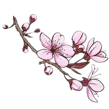

Este projeto visa apresentar algumas características de umas das árvores mais importantes da cultura japonesa, a cerejeira. Desde tempos imemoriais, as cerejeiras ajudaram os camponeses do Japão a identificarem o momento em que o fim do inverno se aproximava. Durante séculos, estas árvores foram veneradas neste país, e sua floração, a sakura, se tornou um poderoso símbolo de alegria e paz, mas também da brevidade da existência.
